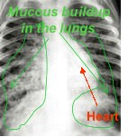

Although it is not easy to observe Cystic Fibrosis with the naked eye, doctors and scientists have several tools that allow them to investigate what is going on inside of the body! Below are X-rays of lungs from two different patients: one with healthy lungs, and one with cystic fibrosis. Remember, the lungs are one of the major organs that are affected by CF. Do you notice a difference between the lungs of the two patients?
CF causes a buildup of mucous in the lungs, which is visible in the X-ray.

Examine the model below to figure out the genetics of CF! Consider the following:
Which genotypes result in a patient with CF?
Is cystic fibrosis a dominant or recessive disease?
What do you think the genotypes of Eric and his immediate family (his parents and brother) are?